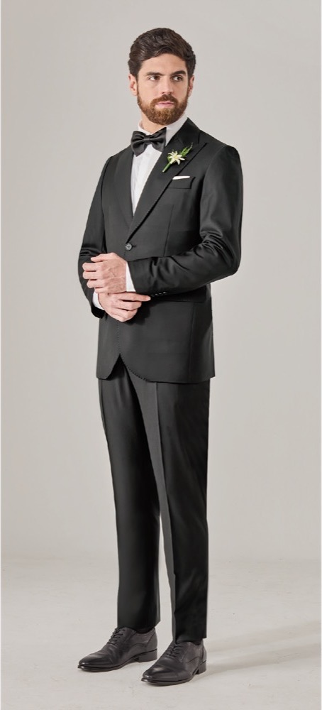
Trajes
De dos y tres piezas, para oficina, ocasión y gala.
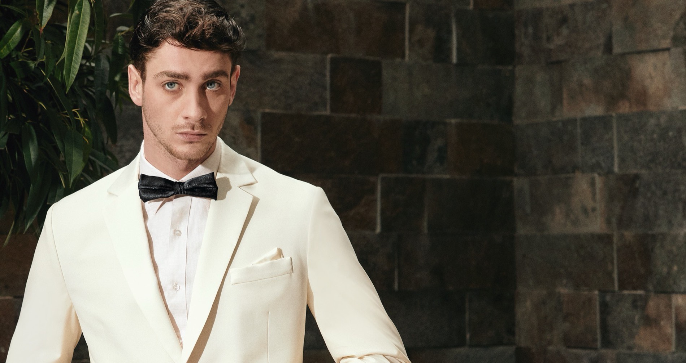
44 años de oficio · Tres tiendas en Lima

De dos y tres piezas, para oficina, ocasión y gala.
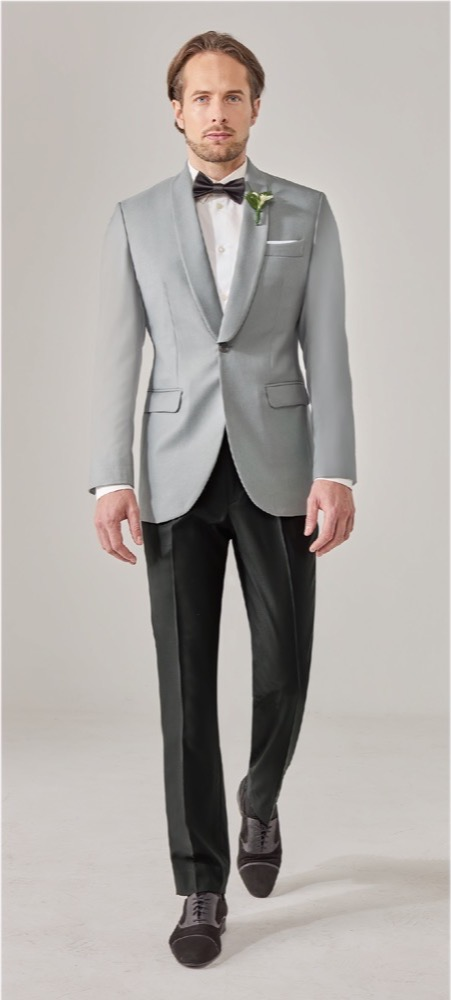
Cuello, puño y silueta a tu medida.
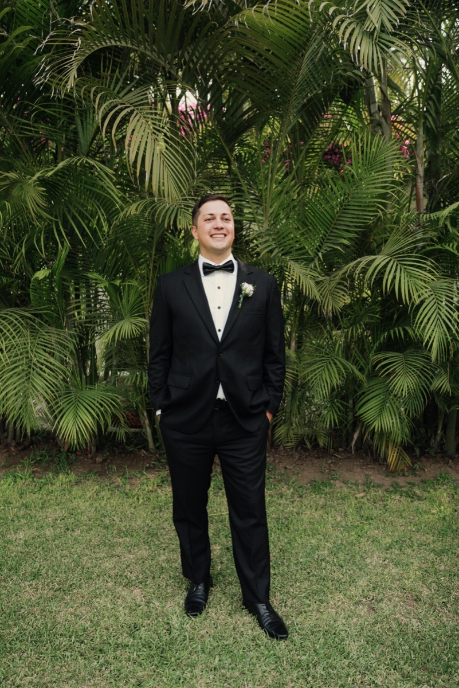
El traje del día más fotografiado de tu vida.
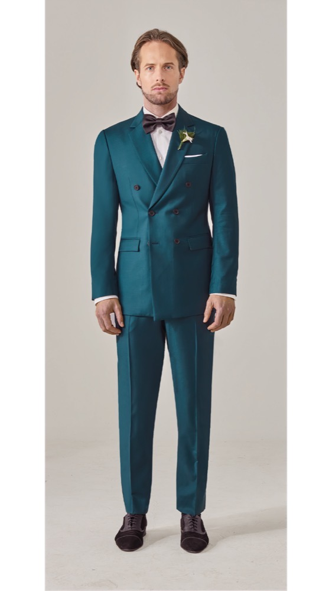
Nacionales e importadas, a precio directo.
Desde 1982 vestimos a Lima. Con nosotros el cliente vive el proceso completo de crear su traje desde cero, guiado por sastres que llevan décadas en el oficio.
No adaptamos una talla: construimos la prenda. El cliente participa en cada decisión, del primer boceto a la última prueba.
Nuestros sastres te guían en la elección de telas, colores, cortes y acabados para que el resultado sea el correcto.
Cada prenda se diseña sobre tus gustos, tus necesidades y tus medidas. Nada es estándar.
Somos distribuidores oficiales de telas nacionales e importadas: tejeduría peruana junto a casas italianas e inglesas. Eso significa dos cosas para ti: una variedad que pocas sastrerías del país pueden ofrecer, y mejores precios, porque la tela no pasa por intermediarios.
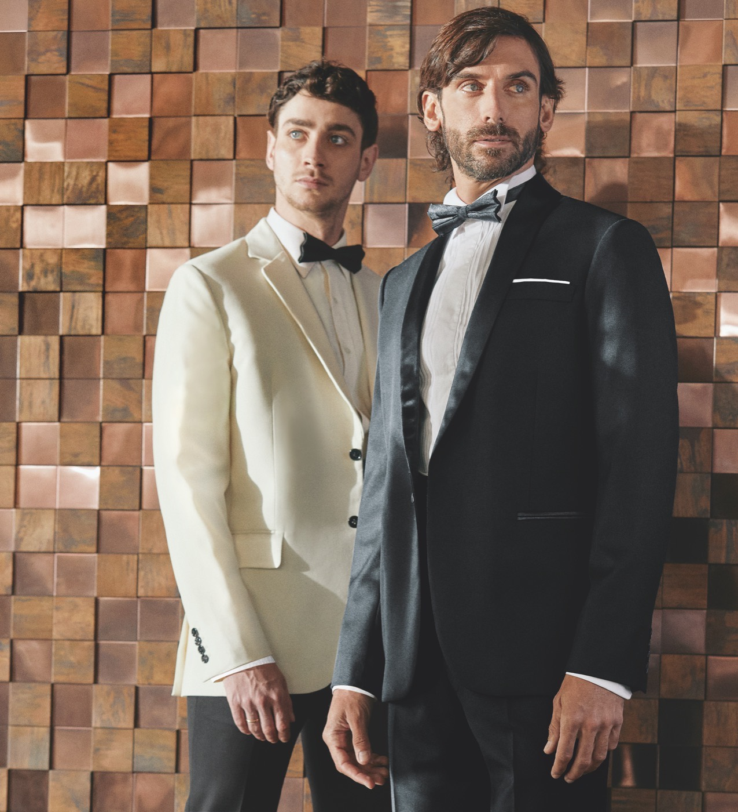
Elige la prenda, el color de tela y los detalles. Es el mismo recorrido que haremos juntos en la tienda, para que llegues a tu cita con la idea clara.
Te responderemos con las opciones de tela disponibles. La prenda final se define contigo en la tienda.
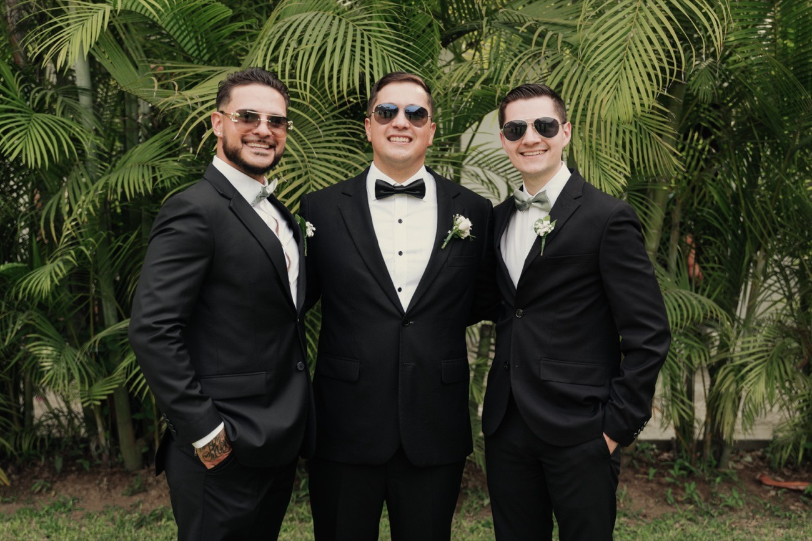
Un paquete pensado para el novio y su cortejo, con todo resuelto desde la primera medida hasta el último gemelo.
En 44 años hemos vestido a clubes, elencos y empresas. Estos son algunos de los proyectos de los que estamos orgullosos.
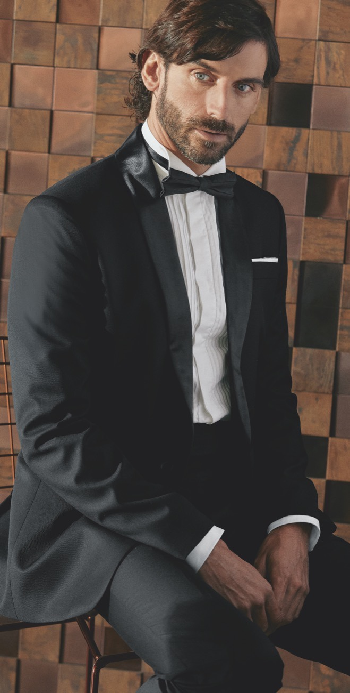
Qué esperar de tu primera visita a la tienda.
Las diferencias que de verdad importan al elegir tejido.
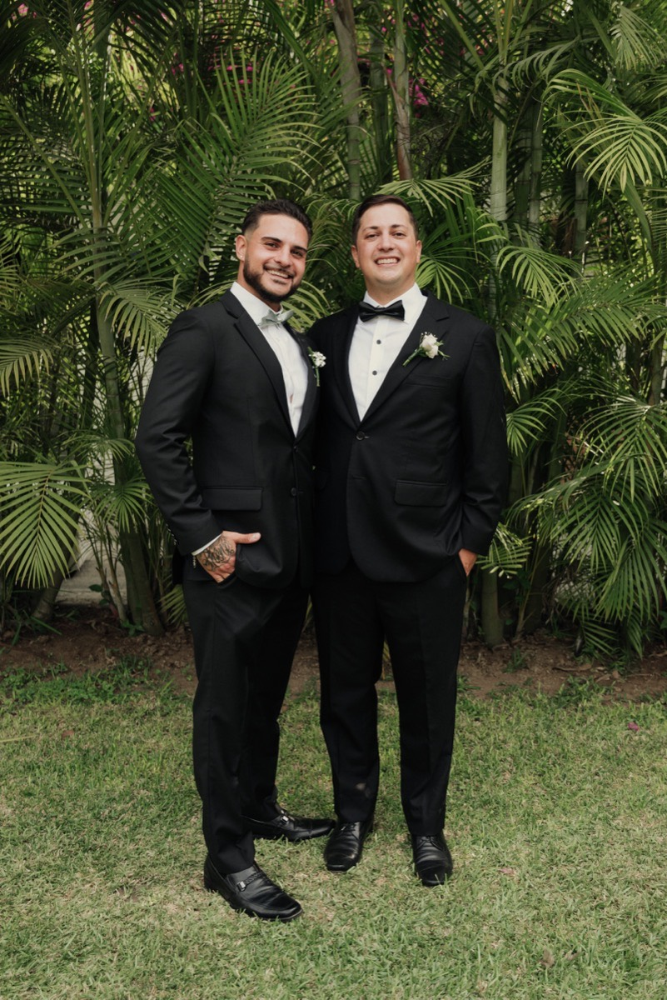
Los tiempos reales para llegar tranquilo a la boda.
Una en Chacarilla y dos en el Cercado de Lima. Escríbenos por WhatsApp y coordinamos en la que te quede más cerca.
No adaptamos una talla: construimos la prenda. Desde 1982, cada traje y cada camisa que sale de nuestro taller nace de un patrón hecho sobre las medidas de una sola persona.
El corte se traza sobre tus medidas y tu postura, no sobre una talla estándar. Por eso cae donde tiene que caer.
Tela, color, corte, solapa, puños, forro y botones. Nuestros sastres te guían, pero la prenda la eliges tú.
Somos distribuidores oficiales, así que eliges entre telas nacionales e importadas sin pagar intermediarios.
Dos oficios distintos bajo el mismo techo. Cada uno con su patrón, sus pruebas y sus decisiones.
De dos y tres piezas, para la oficina, una ocasión o una gala. Esmóquines y chaqués incluidos.
Ver trajesCuello, puño y silueta definidos contigo. La prenda que más contacto tiene con tu piel.
Ver camisasEl mismo método para trajes y camisas, con la diferencia de que una prenda a medida se construye con calma y con pruebas.
Conversamos sobre la ocasión y tu estilo, y tomamos tus medidas en la tienda.
Revisas el muestrario y decides tejido, color, corte y acabados con nuestros sastres.
El taller construye la prenda sobre tu patrón y la ajustamos contigo en las pruebas necesarias.
Recibes la prenda terminada, lista para usar.
El corte define la forma, pero la tela define cómo se ve, cómo cae y cuánto dura. Es la primera decisión y la que más condiciona el resultado.
Elige prenda, tela y detalles en nuestro atelier digital y llega a la cita con la idea clara. O escríbenos y lo vemos juntos.
De dos o tres piezas, para la oficina, una ocasión o una gala. Diseñados sobre tus medidas, tus gustos y la tela que elijas con nuestros sastres.
Solapa de raso, para gala y etiqueta.
Doble botonadura, presencia y carácter.
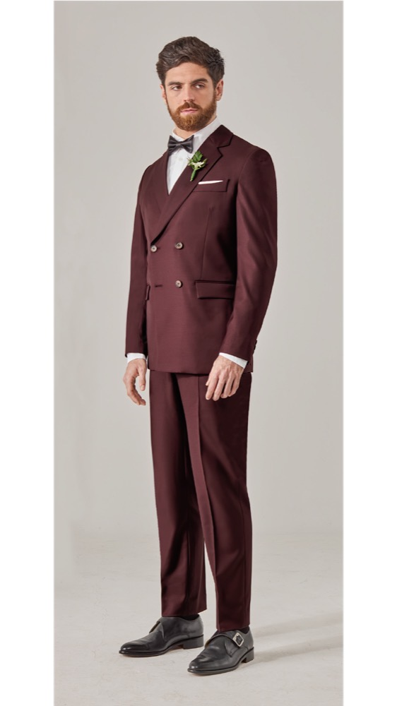
Para quien quiere salir del negro sin estridencias.
Chaqueta de fiesta con pantalón de contraste.
Conversamos sobre la ocasión y tu estilo, y tomamos tus medidas en la tienda.
Eliges el tejido entre nuestras telas nacionales e importadas, con el color, corte y acabado que prefieras.
Nuestros sastres confeccionan la prenda y la ajustamos contigo en las pruebas necesarias.
Recibes tu prenda terminada, lista para usar.
La prenda que está en contacto con tu piel todo el día merece un patrón propio. Cuello, puño y silueta se definen contigo.
Cada camisa se diseña sobre tus medidas y tus gustos: el tipo de cuello, la caída del cuerpo, el puño y la tela. Nuestros sastres te asesoran en cada elección.
Define el carácter de la camisa y cómo se ve con o sin corbata.
Simple para el día a día, doble para gemelos en ocasiones formales.
Del popelín liso al lino fresco, según el clima y la ocasión.
Somos distribuidores oficiales de telas nacionales e importadas. Trabajamos con tejeduría peruana y con casas italianas e inglesas, a precio directo y con la asesoría de sastres que saben qué tejido pide cada prenda.
Tejeduría peruana junto a algunas de las casas más antiguas de Italia e Inglaterra. Al ser distribuidores oficiales tratamos directo con ellas, sin intermediarios de por medio.
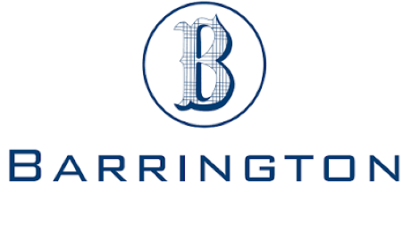
Distribuidor oficialDe todas las casas con las que trabajamos, Barrington es con la que tenemos el vínculo más estrecho. Ser distribuidores oficiales no es un título: es tratar directo con la casa, y eso cambia lo que podemos ofrecerte.
Cada una aporta algo distinto al muestrario: lana para traje, algodón para camisería, tejidos de temporada.
Tejeduría peruana junto a casas italianas e inglesas, para que compares y elijas con criterio.
Al ser distribuidores oficiales, la tela no pasa por intermediarios y eso se refleja en lo que pagas.
Te decimos qué tejido conviene según la ocasión, el clima de Lima y la caída que buscas.
Una muestra de los tonos con los que trabajamos. El muestrario completo está en la tienda: es mucho más amplio de lo que cabe en una pantalla.
El azul de la casa
Etiqueta y gala
Oficina y diario
Sobrio y versátil
Para climas templados
Chaqueta de fiesta
Carácter sin estridencia
Ocasión y noche
Con textura, informal
Gala de verano
Lino y frescos
Camisería
Coordinamos una visita en Surco o en el Cercado de Lima y revisamos las telas contigo.
Es el día en que más fotos te van a tomar en la vida. Del traje a los gemelos, lo resolvemos todo en el atelier, sin que tengas que ir juntando piezas de sitios distintos.
Una sola conversación, una sola medida, una sola entrega. Todo lo que vas a llevar puesto sale del mismo taller y combina entre sí.
Elegir el traje es parte de la boda. Ven con tu pareja, tu familia o tus padrinos: aquí se decide en conjunto, sin prisa.
Nuestros sastres te guían en la tela, el color, el corte y los acabados según la hora, el lugar y el estilo de tu boda.
Tomamos medidas y ajustamos en las pruebas necesarias, para que el día de la boda la prenda caiga exacta.
Un traje a medida se construye con pruebas, y las pruebas necesitan calendario. Cuanto antes empecemos, más tranquilo llegas al día.
Conversamos sobre la boda, vemos telas y tomamos tus medidas.
El taller construye la prenda sobre tu patrón.
Ajustamos contigo hasta que la caída sea la correcta.
Recibes el traje y los complementos, listos para el día.
Vestimos también a padrinos, padres y hermanos, para que el conjunto se vea coherente en las fotos.
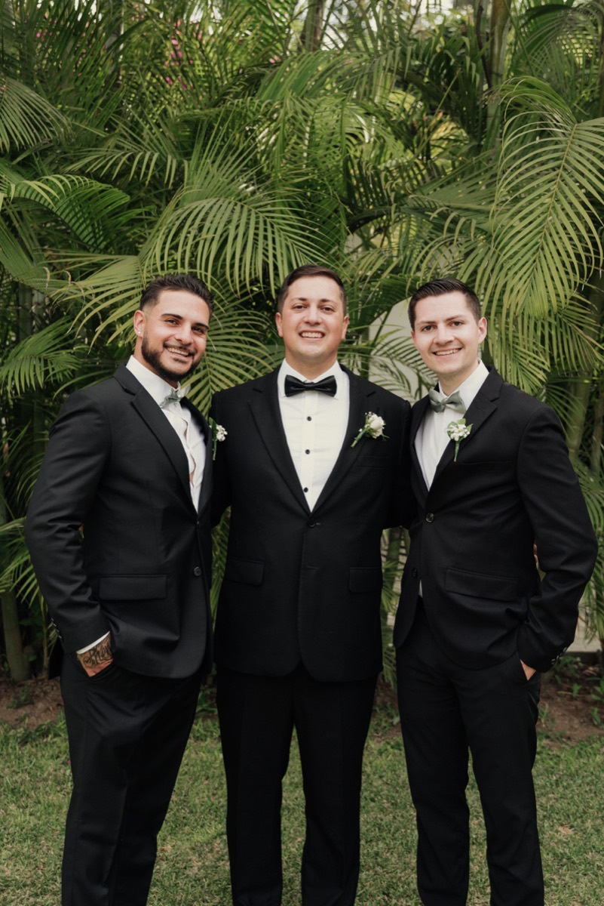
Nuestra tienda de Chacarilla es la sede del servicio de novios. Es el espacio donde te tomas el tiempo: vienes acompañado, revisas telas con calma y decides sin apuro.
Escríbenos con la fecha de tu boda y coordinamos el calendario de medidas y pruebas sin apuros.
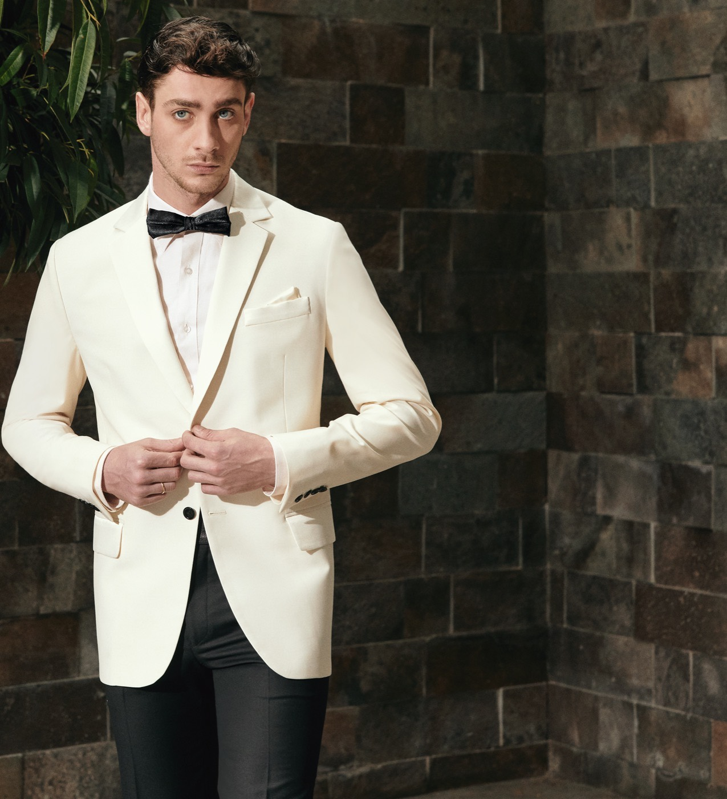
Vestuario a medida para equipos y directivos. La misma confección de siempre, coordinada para varias personas.
Clubes, elencos y marcas que han vestido con Andrés Vargas.
Trajes y camisas a medida para la plana gerencial, con la imagen que el cargo pide.
Vestuario coherente para equipos comerciales y de atención, con la misma línea para todos.
Al ser distribuidores oficiales, en pedidos por volumen la diferencia en la tela se nota.
Coordinamos la toma de medidas de todo el equipo y los plazos de entrega, para que la operación de la empresa no se interrumpa.
Cada programa se cotiza según el número de personas, las prendas y la tela elegida. Cuéntanos qué necesitas y preparamos una propuesta.
Lo que hemos aprendido en 44 años, contado sin tecnicismos: cómo elegir, cómo cuidar y cuándo empezar.
Qué esperar de tu primera visita y cómo llegar preparado.
Las diferencias que de verdad importan al elegir el tejido.
Los tiempos reales para llegar tranquilo al día de la boda.
Traducción práctica de lo que dice la invitación.
Colgado, cepillado y descanso: lo que sí funciona.
Colores que funcionan en Lima y con qué combinarlos.
No hace falta esperar al artículo. Escríbenos y te respondemos lo que necesites saber sobre tu prenda.
Tres direcciones en Lima: una en Chacarilla, Surco, y dos en el Cercado de Lima. En todas encuentras el muestrario completo y a nuestros sastres.
En las tres tiendas encuentras el muestrario completo de telas y a nuestros sastres para asesorarte.
Escríbenos por WhatsApp y acordamos día y hora en la tienda que te quede más cerca.
Vemos la ocasión, revisamos el muestrario y decides tela, color, corte y acabados con nuestros sastres.
Tomamos tus medidas y coordinamos las pruebas necesarias hasta que la caída sea la correcta.
Elige el canal que prefieras. Te respondemos con los horarios disponibles en la tienda que te quede más cerca.